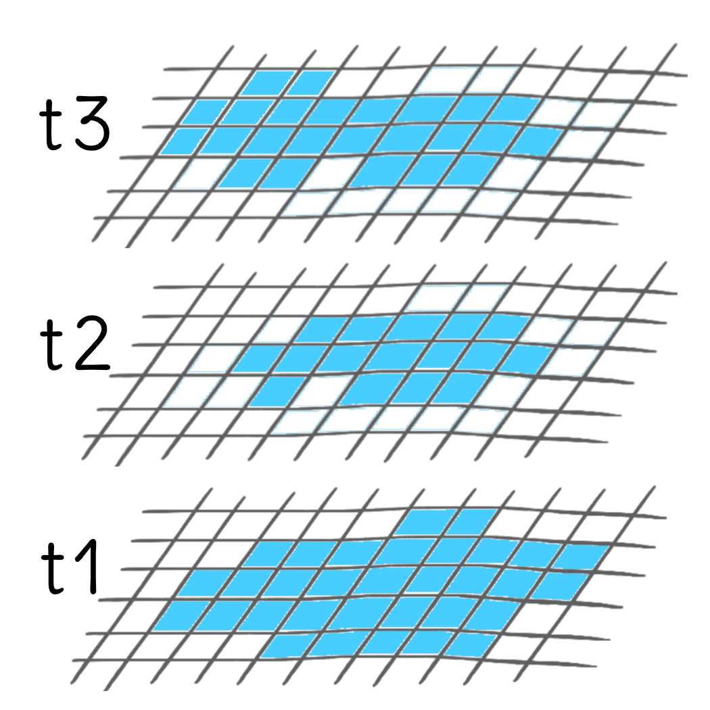

head1
head2

In R, vector data cube structures are supported in the form of array objects by the stars package and as tabular objects1 with the cubble package. sf is used both by cubble and stars to handle the spatial dimensions. Finally, both stars and cubble support certain tidyverse functions.
Data cubes are multi-dimensional data structures. The most commonly known data cubes, particularly in Earth observation (EO), are raster data cubes. Raster data cubes are structures frequently used to organise time series of satellite imagery, gridded climate data, etc. They have minimum two spatial dimensions: longitude or x and latitude or y. The remainder dimensions can either be time, or other dimension such as bands for EO data.